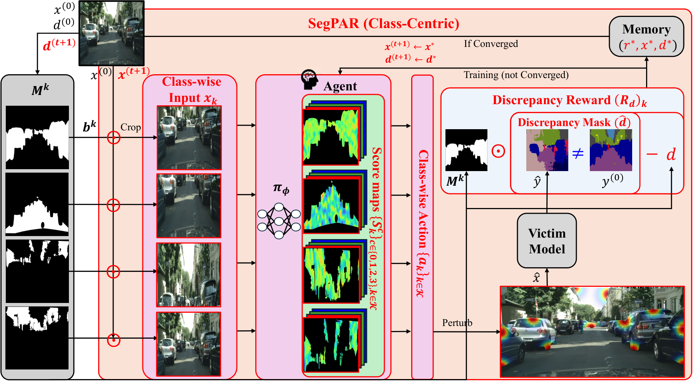
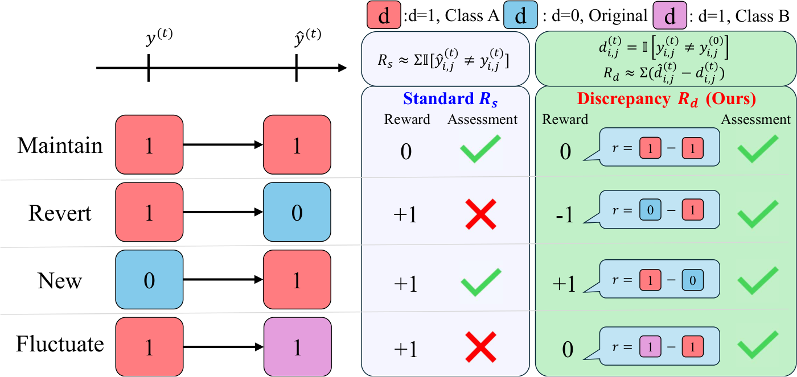
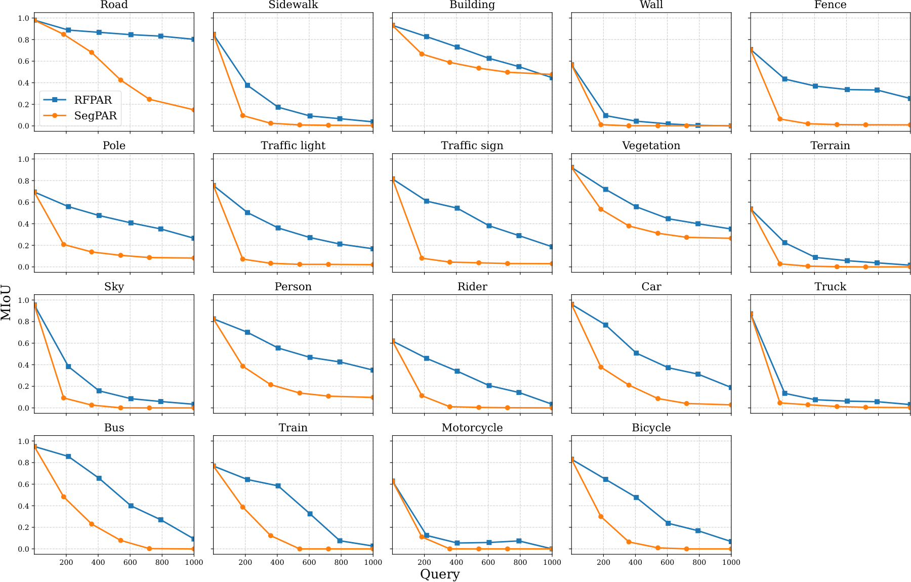
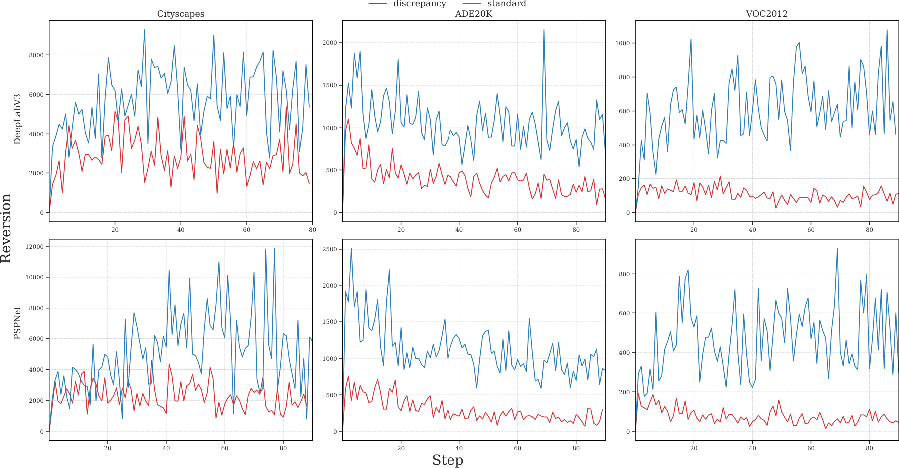
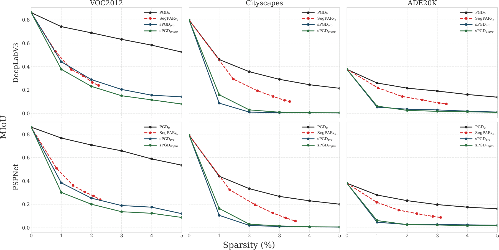

Compare the Attacks
Pick a dataset and an attack. SegPAR breaks the prediction while perturbing the fewest pixels.
Abstract
Despite the practical relevance of sparse decision-based black-box threats, they have received limited attention in semantic segmentation. To bridge this gap, we adapt the most representative decision-based black-box sparse attacks from the classification domain to serve as baselines, establishing a rigorous benchmark for this underexplored setting. In this context, we demonstrate that one of the existing methods suffers from severe query inefficiency due to its image-centric pixel accumulation, which rapidly exhausts query budgets across the vast image space.
To overcome this, we propose SegPAR, a novel decision-based framework that shifts to a class-centric exploration paradigm. Furthermore, to eliminate the misleading feedback generated by standard decision rewards during pixel accumulation, we introduce a novel discrepancy reward. Extensive experiments show that SegPAR significantly outperforms black-box baselines in sparsity efficiency and MIoU reduction, while remaining competitive with white-box sparse attacks.
- The first systematic study of decision-based black-box sparse attacks for semantic segmentation.
- SegPAR, a decision-based black-box sparse attack that improves query efficiency through class-centric exploration.
- A discrepancy reward that removes the unreliable signals of standard decision rewards during pixel accumulation. With SegPAR, it achieves the strongest black-box performance and is competitive with white-box sparse attacks under the same sparsity constraints.
Method
A segmentation attack has to flip labels across many class-specific decision boundaries, not a single global one.

Class-centric exploration. An image-centric attack such as RFPAR tends to spend its queries on a few large or easily perturbed regions. SegPAR instead queries the model once, fixes a mask for every predicted class, and crops the image to each class's bounding box. The RL agent, conditioned on the class and its crop, outputs sparse pixel perturbations, so the attack spreads across all classes in the image.
Discrepancy reward. A standard decision reward counts every pixel whose prediction changes between steps. It therefore also rewards pixels that revert to their original class or hop between wrong classes, and this misleads the agent. SegPAR measures, inside each fixed class mask, how many more pixels now differ from the initial prediction than at the previous step. Reverted pixels lower this reward instead of raising it.
Memory. As in RFPAR, SegPAR keeps the best perturbation, discrepancy mask, and reward in memory, and continues from the best image once training converges.

Results
Lower MIoU with fewer perturbed pixels than every black-box baseline, under a 1,000-query budget.
Down from 0.793 on clean images, while perturbing 3.53% of the pixels.
Against DeepLabV3, lowering MIoU from 0.861 to 0.238 with 680 queries on average.
On Cityscapes, compared with 10.51% for PointWise, while reaching a lower MIoU (0.341 vs. 0.594).



BibTeX
@inproceedings{song2026segpar,
title = {SegPAR: Class-Centric Decision-Based Sparse Attack for Semantic Segmentation},
author = {Song, Dongsu and Go, Daeyun and Seo, Boseung and Jung, Jay Hoon},
booktitle = {European Conference on Computer Vision (ECCV)},
year = {2026}
}